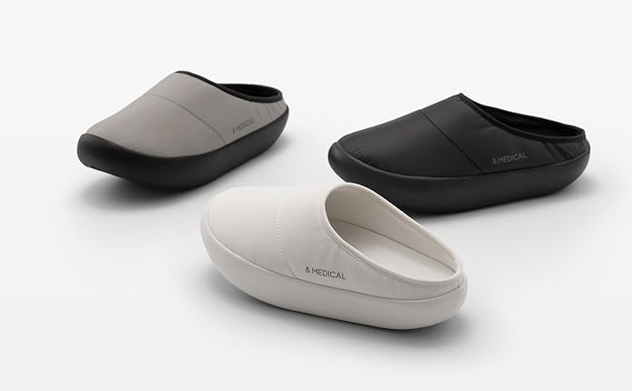
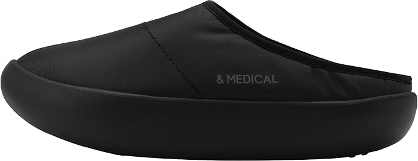
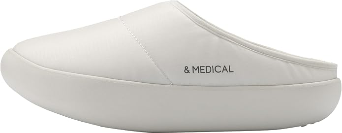
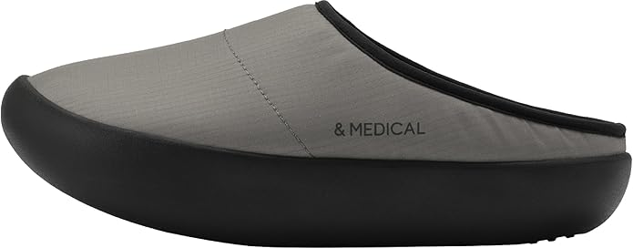

Turn daily steps into light training — rocker sole, ~3.5° incline, indoor-to-outdoor versatility.

Lineup
Pure Black
Off-White
Stone Gray / Black~3.5° Forefoot Incline
Toe-side lift creates a gentle uphill sensation on flat ground so the same walk recruits calves and glutes more like slope training.
Rounded Rocker Geometry
Continuous curved bottom supports a smooth heel-to-toe roll while subtle instability encourages light core engagement when you stand or stride.
Washable, Fresh-Feeling Insole
Removable cushioned insole is hand-washable with antibacterial and deodorizing treatment to keep everyday wear cleaner and more comfortable.
3.5°
Forefoot incline
223g
Per shoe (size M)
~6%
Grade feel (brand claim)
Upper
Water-repellent polyester
Soft padded shell with clean mule entry for quick on-and-off around town or indoors.
Insole
Removable cushioned footbed
Hand-washable with antibacterial and odor-resistant treatment for fresher daily wear.
Platform sole
Sculpted rocker platform
Thick curved profile blends cushioning with the incline concept for fitness-oriented walking.
Reference conversions only — always match your foot length to the seller’s official chart.
Shoppers highlight
Everyday training without the “gym shoe” look
Owners describe a noticeable calf and glute burn on flat sidewalks, with a design that still blends with casual outfits.
Easy on, fresher feel
Pull-on convenience plus a removable, hand-washable insole is often praised for busy routines and warmer seasons.